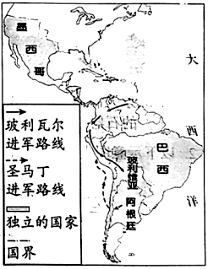

2023年北京市中考历史试卷 · 选择题 第16、17、18、19、20题
16．（1.5分）马铃薯（土豆）原产于美洲。明代《农政全书》记载：“土芋，一名土豆；蔓生叶如豆，根圆如鸡卵，亦可蒸食。”我国出现这一记载的历史背景是（ ）
A．遣唐使来华B．中世纪城市兴起
C．封建庄园的衰落D．新航路的开辟
17．（1.5分）英国国王原来有权以国家的名义借债。“光荣革命”后，由议会取代国王掌握了此项权力。这反映了当时英国（ ）
A．王权受到限制B．君主制度废除
C．推崇“君权神授”D．实行联邦制度
18．（1.5分）对如图形势图解读正确的是（ ）

A．拉丁美洲独立运动发展B．明治维新发展资本主义
C．非暴力不合作运动开展D．非洲国家摆脱殖民统治
19．（1.5分）19世纪下半叶，欧洲以产业工人为主体的社会主义组织致力于通过摧毁资本主义制度、在一切经济领域消灭剥削，实现人民大众的平等。这一现象出现的历史背景是（ ）
A．《人权宣言》的发表B．《拿破仑法典》的颁布
C．马克思主义的诞生D．俄国十月革命的胜利
20．（1.5分）有学者指出，从全球视角来看，第一次世界大战后欧洲霸权开始削弱（ ）
A．爆发的原因B．复杂的进程C．战争的性质D．深远的影响